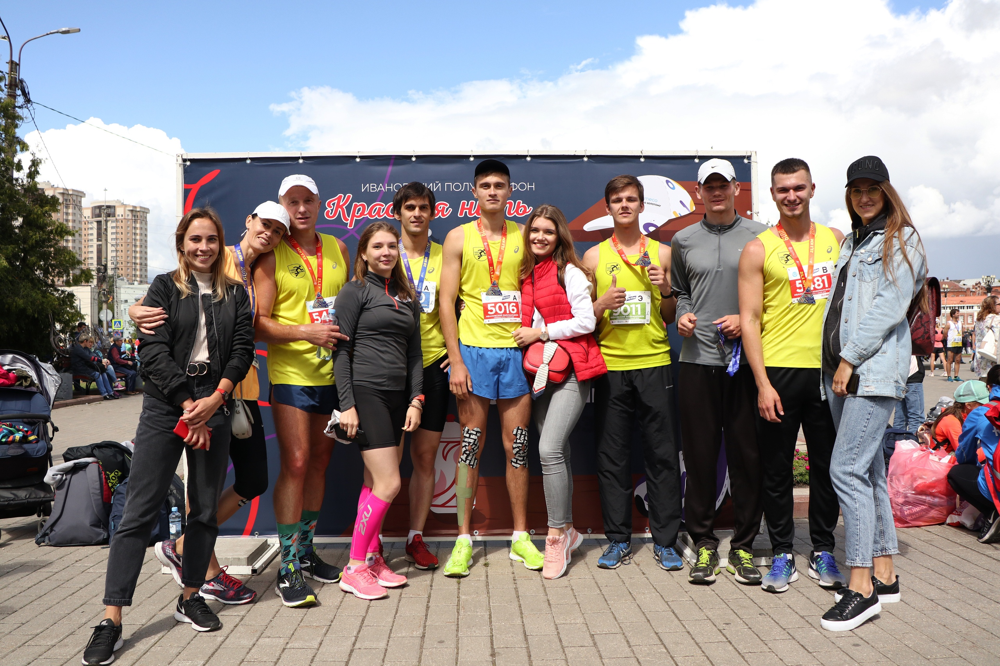

Ивановский Беговой Клуб

Ivanovo Running Club - первый беговой клуб в городе Иваново, основанный 31 мая 2015 года Романом Тюриным и Алексеем Титовым. Уже четыре года наши спортсмены преодолевают разные дистанции в России и за рубежом.
Результаты Ивановского полумарафона "Красная нить"
Новость 2 что-то там
Новость 3 что-то там
Календарь пробегов 2019
Предстоящие
- Стамбульский марафон 3 ноября
- Московский полумарафон "Моя Столица" 6 октября
- Полумарафон "Ростов Великий" 29 сентября
- Ярославский полумарафон «Золотое кольцо» 15 сентября
Прошедшие
- Ивановский полумарафон "Красная нить" 7 июля
- Санкт-Питербургский марафон "Белые ночи" 30 июня
- Полумарафон "Здорово, Кострома" 12 июня
- Угличский полумарафон «Волжский берег» 5 мая
Наша команда